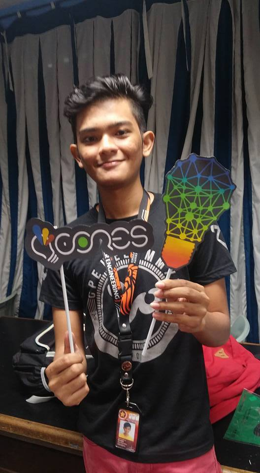

Hello!!!!
I'm John Elijah de Asis

You can visit my other page here:
FACEBOOK
TWITTER
GITHUB
You can contact me with:
Contact No: 09951894097
Email: deasisjohnelijah@gmail.com
About Me
I'm 20 years old. I want to be a system and network administrator after I graduate. Im currently studying at Polytechnic Univeresity of the Philippines in the course Bachelor of Science in Computer Engineering. I'm passionate about games and studying computer networks and other stuffs.
OJT Experience:
RemoteStaff Inc. - worked as a technical and network support
Sun Life Financial Philippines - worked as a helpdesk and technical support
Projects:
EyeMo (2015) - Digital Signal Processing
Description: Automobile that detects and recognizes arrows to know where it will go
Face Recognition System (2015) - Digital Signal Processing
Description: Webcam that recognizes face that is on the database and follows it
LiDaR (2015) - Digital Signal Processing
Description: Laser Mapping
Mobot (2014) - Electronics II
Description: Car that detects obstacles and turns right or left
Automated Gluten-free Banana Flour Maker (2016) - Thesis
Description: Machine that makes raw banana int banana flour
Skills:
• Proficient in Microsoft Office ( Word, Excel, Powerpoint)
• Computer Troubleshooting
• Knowledge in Software Applications
• Knowledge in Electronics and Circuitry
• Basic Knowledge in Programming Languages
• Proficient in developing logic and digital circuit designs
• Basic Knowledge in Multimedia Arts
(Photoshop and Video Editing)
• Proficient in Circuit Wizard and Multi-sim (Electronics Software)
• Basic Knowledge in Computer Networking
• Knowledgeable in Web development (html, css, javascript)